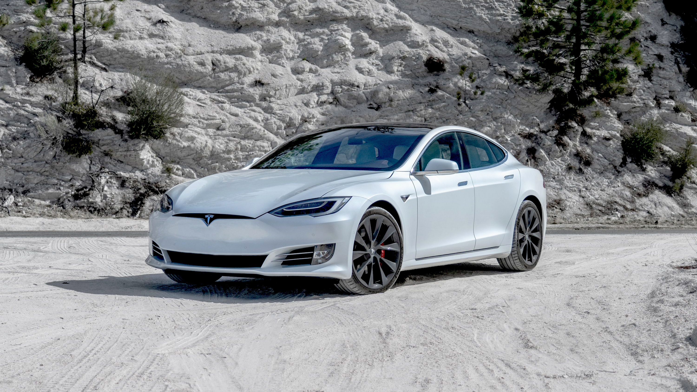

Model S
Non ha rivali
Con un coefficiente di resistenza aerodinamica di appena .208 Cd, il più basso al mondo, Model S è progettata per garantire velocità, resistenza e autonomia. L'aerodinamica migliorata, il telaio più ampio, le gomme e cerchi offrono prestazioni più reattive per consentirti di affrontare le curve in modo più veloce e disinvolto.
I pianali di Model S uniscono tecnologie di powertrain e batterie per garantire prestazioni, autonomia ed efficienza senza rivali. L'architettura termica rivista del modulo e del pacco batterie consente una ricarica più rapida e assicura maggiore potenza e resistenza in tutte le condizioni. Il pacco batterie della tesla Model S puo arrivare fino a 634 chilometri di autonomia, il piu capiente del gruppo. Se non bastasse la fittissima rete di ricarica Supercharger tesla non ti lascierà mai a piedi.
Tesla model S puo essere acquistata in due allestimenti: la Standard e la Plaid.
- Il Dual Motor a trazione integrale dell'allestimento Standard offre più autonomia di qualsiasi altro veicolo della nostra gamma attuale oltre a una potenza spropositata e al massimo controllo.
- L'allestimento Plaid offre l'accelerazione più rapida rispetto a qualsiasi altro veicolo in produzione. Mantiene una potenza di oltre 1.000 cavalli fino a 322 km/h con la trazione integrale Tri-Motor, con torque vectoring e tre rotori indipendenti rivestiti in carbonio.

Model 3
La più economica
La trazione integrale di Tesla model 3 dispone di due motori indipendenti per una maggiore ridondanza, ciascuno con una sola parte mobile per la minima manutenzione e la massima durata, essi controllano digitalmente la coppia sulle ruote anteriori e posteriori per garantire una manovrabilità e un controllo della trazione notevolmente migliori.
La sicurezza è l'elemento più importante del design complessivo di Model 3. La struttura metallica è una combinazione di alluminio e acciaio per garantire la massima resistenza in ogni area del veicolo.
Come tutte le vetture del gruppo tesla è equipaggiata con le avanzate funzioni di sicurezza di Autopilot, progettate per assisterti negli aspetti più gravosi della guida.
Tesla model 3 puo essere acquistata in tre allestimenti: la Trazione posteriore, la Performance e la Long Range.
- L'allestimento Trazione posteriore è la meno costa, nonostante un autonomia 491 km, velocita massima di 225 km/h e accelerazione di 6,1 s.
- L'allestimento Performance è fornito con un dual motors che conferisce un accelerazione di 3,3 s, velocità di 261 km/h e autonomia di 547 km.
- l'allestimento Long Range è studiato per avere una maggiore autonomia di 602 km, mantenendo un accelerazione di 4,4 s e una velocità di 261 km/h.
Model X
Comodità e alte prestazioni
Model X Plaid è il SUV più performante mai costruito, con il coefficiente di resistenza aerodinamica di .24 Cd più basso mai realizzato. Con più potenza e la più veloce accelerazione di qualsiasi altro SUV. L'architettura aggiornata della batteria consente agli allestimenti Long Range e Plaid scatti fulminei consecutivi senza degrado delle prestazioni.
Model X è pensata per offrire la massima comodità, con un ampio spazio di carico e capacità di traino di 2.300 kg. L'impianto audio da 960 W, con 22 speaker e sistema di riduzione attiva dei rumori della strada offre la miglior esperienza d'ascolto, ovunque ti trovi.
Tesla model X puo essere acquistata in due allestimenti: la Standard e la Plaid.
- L'allestimento Standard è equipagiato con un Dual Motor a trazione integrale che fornisce una maggiore autonomia e offre livelli spropositati di potenza e accelerazione.
- L'allestimento Plaid è equipagiato con un tri-motor a trazione integrale con torque vectoring incorpora tre motori indipendenti, ognuno con un rotore rivestito in carbonio che mantiene gli oltre 1000 cavalli di potenza per tutto il tempo fino a velocità massima.
Model Y
Comodità e prezzi contenuti
La trazione integrale Tesla Model Y ha due motori elettrici indipendenti molto reattivi che controllano in modo digitale la coppia sulle ruote anteriori e posteriori, il che migliora notevolmente manovrabilità, stabilità e controllo della trazione, infatti essa affronta senza alcun problema pioggia, neve, fango e strade sterrate.
La Model Y ha ottenuto 5 stelle nella valutazione di sicurezza Euro NCAP del 2022 e ha vinto il premio di miglior veicolo nella categoria dei fuoristrada di piccole dimensioni. Model Y offre la massima versatilità, con spazio per cinque adulti e tutti i loro bagagli.
Tesla model Y puo essere acquistata in tre allestimenti: la Trazione posteriore, la Performance e la Long Range AWD.
- L'allestimento Trazione posteriore è il meno costa, nonostante un autonomia 455 km e accelerazione di 6,9 s.
- L'allestimento Performance è fornito con un dual motors a trazione integrale che conferisce un accelerazione di 3,7 s, velocità di 261 km/h e autonomia di 514 km.
- l'allestimento Long Range AWD è studiato per avere una maggiore autonomia di 533 km, mantenendo un accelerazione di 5 s e una velocità di 217 km/h.
Cybertruck
Il futuro
Un nuovo riferimento in termini di resistenza, velocità e versatilità, possibile solo con un design interamente elettrico. La potente trasmissione e il baricentro basso garantiscono coppia e controllo di trazione eccellenti, per un'accelerazione da 0 a 60 mph in soli 2,9 secondi e fino a 500 miglia di autonomia.
Cybertruck è costruito con una scocca esterna creata per garantire la massima resistenza e protezione dei passeggeri. A partire da un esoscheletro quasi impenetrabile, i componenti sono progettati per offrire il massimo livello di resistenza e durata, da un'anima strutturale in acciaio inossidabile laminato a freddo super resistente (30X) al vetro blindato Tesla. Il vetro ultra resistente e il composito a strati polimerici sono in grado di assorbire e deviare le forze di impatto migliorando le prestazioni e la resistenza.
Puoi utilizzare il vano di carico esterno di oltre 100 piedi cubi, con serratura e ripiano di carico inferiore, il bagagliaio anteriore e lo spazio nei montanti.
Design innovativo, massima sicurezza e resistenza, con prestazioni mai viste in un suv